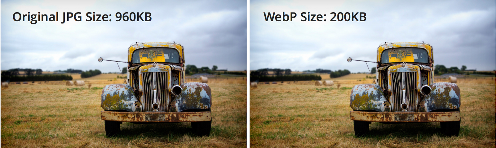

WebP images — это формат изображений от Google, предназначенный для размещения картинок в интернете в качестве.
Размер файла получается меньше, чем у других форматов, но качество при этом не ухудшается.
Данный формат впервые был представлен в 2010 году, но активно стал использоваться последние несколько лет.
Применение формата WebP позволяет увеличить скорость загрузки страницы.
По данным Google, изображения WebP:
Помимо экономии объема, формат WebP поддерживат прозрачность (форматы Jpeg i Gif этого не умеют)
Основным недостатком является то, что изображения WebP в настоящее время не поддерживаются всеми браузерами,
хотя все больше и больше браузеров добавляют поддержку.
Браузеры, поддерживающие формат WebP:
Браузеры, не поддерживающие формат WebP:
Есть еще пара особенностей формата WebP. Он использует новый алгоритм сжатия, поэтому искажение
(т.е. деформация и ухудшение качества) выглядят иначе относительно других типов файлов.
Настройки сжатия не повторяют в точности таковые в JPEG. Не стоит ожидать,
что 50%-качество JPEG будет соответствовать 50%-качеству WebP. В случае в WebP качество падает довольно стремительно,
так что начинать лучше с наибольших значений и постепенно их уменьшать.
Еще одним недостатком можно выделить неудобство скачивания для пользователя: чтобы сохранить на устройстве картинку,
ее надо преобразовать в другой формат,
так как WebP позволяет ее только просматривать в браузере.
Ниже пример изображений: слева JPEG 41kb, справа WebP 42kb


В данном случае WebP проигрывает, так как у Jpeg лучше прорисована фактура кожи, поры, зрачки глаз. WebP потерял часть деталей,
в некоторых местах появилась замыленность изображения.
Еще один пример:
В данном случае WebP отлично справился. Искажения практически не видны, а размер файла заметно уменьшился.
Можно сделать вывод, что формат WebP уместно использовать для небольших изображений, в которых не нужна четкая прорисовка резких переходов
деталей, он хорошо справляется с плавными переходами цветов, градиентами. Если же от картинка подразумевает акцент на детали, рассматривать
объекты под увеличением, то лучше применять другие форматы изображений.